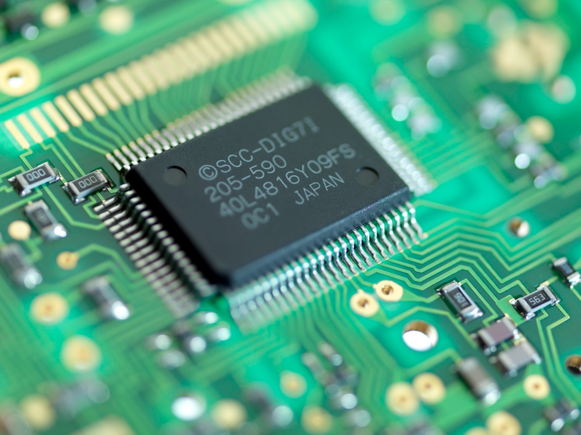
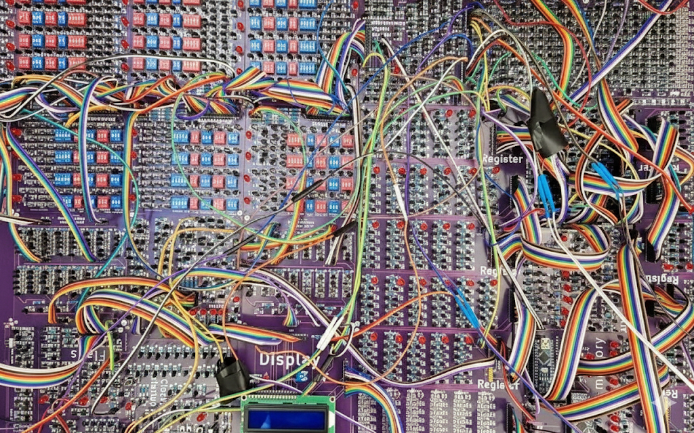
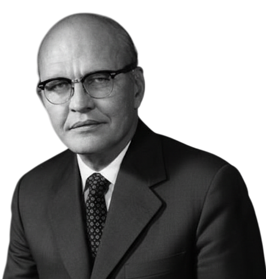
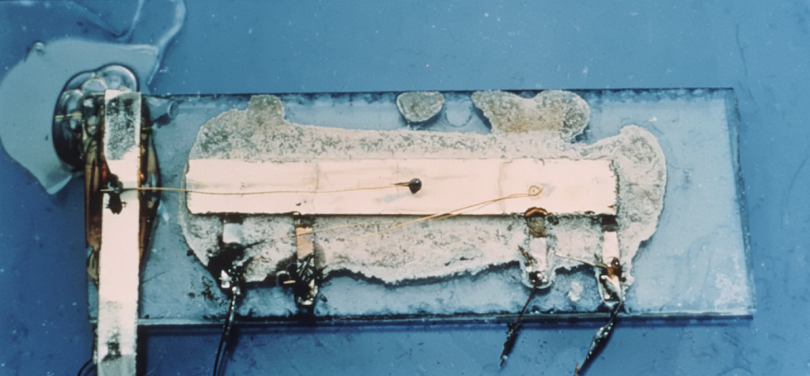
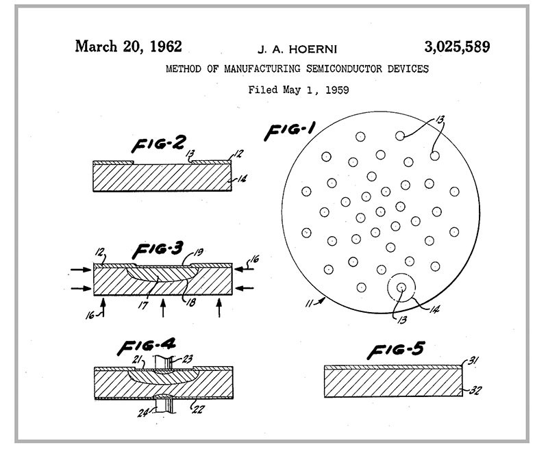
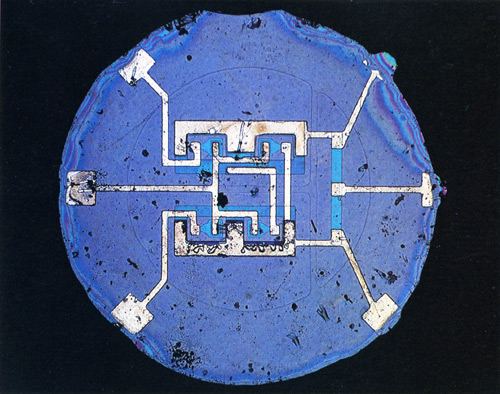
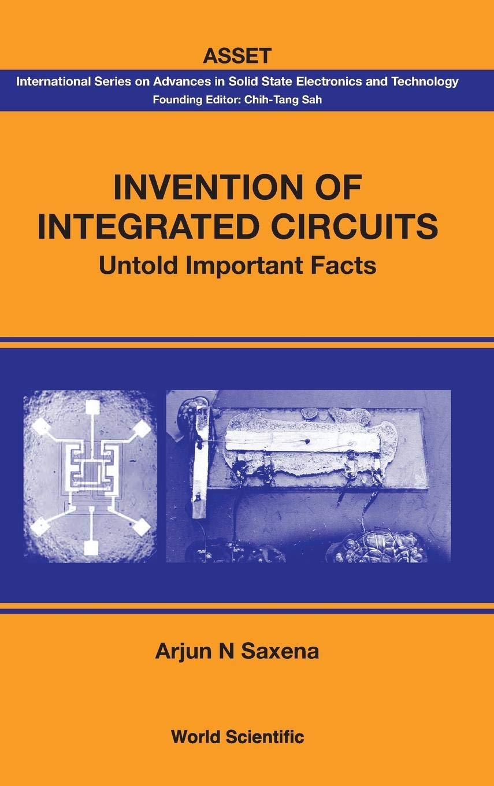
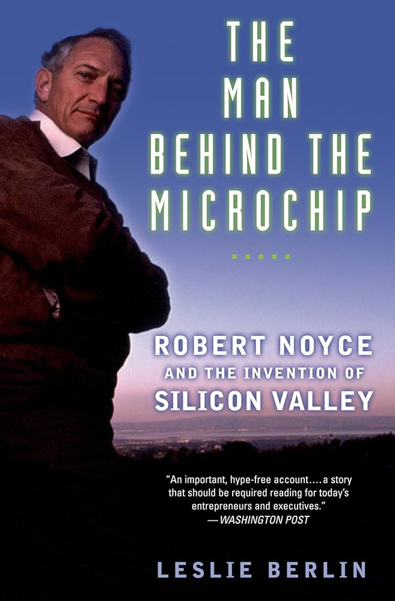

Agrupa milhares ou até bilhões de componentes eletrônicos
O circuito integrado integra esses elementos para executar funções lógicas e de processamento de sinais mais sofisticadas.
Essa integração massiva permitiu a criação de dispositivos eletrônicos compactos, poderosos e eficientes
Revolucionaram a computação e a eletrônica moderna.

A Tirania dos Números

Transistores surgiram como uma alternativa revolucionária às válvulas a vácuo
Computadores se tornavam mais complexos e a quantidade de conexões crescia de forma descontrolada
milhares de fios e soldas aumentavam os custos e reduziam a confiabilidade.
ENIAC: utilizava mais de 17 mil válvulas e frequentemente sofria panes
Bombardeiro B-29: possuía centenas de milhares de conexões elétricas sujeitas a falhas.
Os Criadores
Jack Kilby
Jack Kilby era, na época, um engenheiro da Texas Instruments;
Se dedicou a encontrar uma maneira de reduzir a quantidade de fios necessários para conexão;
solução: montar múltiplos componentes em uma única peça de germânio;


Primeiro protótipo de circuito integrado feito por Jack Kilby
Usou uma pastilha de germânio, sobre a qual conectou manualmente um transistor, resistores e capacitores com fios metálicos bem finos;
Provou que era possível integrar vários componentes em um único pedaço de material semicondutor;
Embora funcional, ainda não permitia a produção de circuitos integrados em larga escala
Robert Noyce
Palo Alto (Califórnia): Um grupo de oito engenheiros que deixa o laboratório de semicondutores de William Shockley ;
Fundam sua própria empresa: Fairchild Semicondutor;
Entre eles, destaca-se Robert Noyce;
O Método Planar

Método planar desenvolvido por Jean Hoerni
O colega de Noyce, Jean Hoerni, um físico suíço, desenvolveu o chamado método planar;
Nesse processo, uma lâmina de silício é coberta com uma fina camada de dióxido de silício, que funciona como proteção;
Em seguida, são abertas pequenas “janelas” nessa camada, permitindo tratar o silício exposto e formando as regiões ativas do transistor
Por fim, depositam-se contatos metálicos sobre essas aberturas, interligando os componentes diretamente na superfície da pastilha.
essa técnica aumentou a confiabilidade e possibilitou a fabricação de transistores e, posteriormente, de circuitos integrados em larga escala
Meses depois, Noyce percebeu que o método planar de Hoerni poderia ser usado para produzir múltiplos transistores na mesma peça de silício.;
Sua versão eliminava fios soltos e, sobretudo, tornou possível a produção em massa de circuitos integrados, algo que o protótipo de Kilby ainda não permitia.;
Assim, os trabalhos de Kilby e Noyce consolidaram o nascimento dos chips modernos.

Controvérsias

A obra de Arjun N. Saxena
Discorre sobre os principais responsáveis pela criação e popularização dos circuitos integrados.;
Afirma que, apesar da grande importância de Kilby e Noyce, os créditos dados a esses físicos/engenheiros podem ser um tanto exagerados;

A Obra de Leslie Berlin
Afirma que o verdadeiro protagonista e maior contribuidor não só para a criação do microchip, mas também para a formação do Vale do Silício, foi Robert Noyce;
Evolução Técnica e Importância Global
Os primeiros circuitos integrados, vendidos em 1960, tinham apenas alguns dispositivos por chip. Hoje, um circuito integrado de ultra larga escala (ULSIC - Ultra Large Scale IC) possui bilhões de dispositivos por chip;
Essa evolução transformou a maneira como os computadores são projetados e construídos;
Arjun N. Saxena: "não houve invenção mais importante do que o circuito integrado para o desenvolvimento e progresso da humanidade, pelo menos a partir de meados do século XX";
Mesmo inovações anteriores, como a revolução industrial e agrícola, foram aprimoradas pelos circuitos integrados em seus sistemas de controle;
É quase impossível para qualquer negócio operar, e para a maioria das pessoas em países desenvolvidos, viver sem os circuitos integrados;
O mercado da integração em ultra larga escala é o o coração do mercado de sistemas eletrônicos.